IDENTIDADE VISUAL · 2026
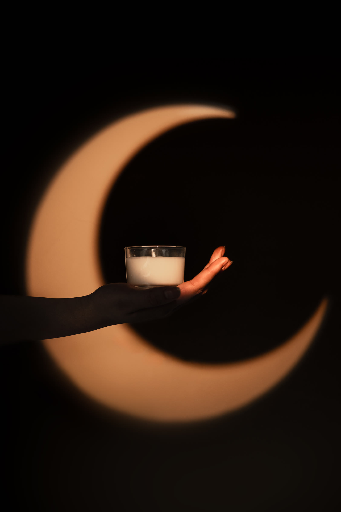
Identidade visual · 2026
I
Almah é uma marca de velas aromáticas feitas à mão. O nome carrega a palavra alma, e o símbolo junta uma lua crescente e uma chama: uma luz que nasce dentro da lua. O resto do universo vem do mesmo céu, com sol raiado, nuvens de traço oriental, estrelas de quatro pontas e molduras de carta de tarô.
II
Almah makes handmade scented candles. The name carries the Portuguese word for soul, and the symbol joins a crescent moon and a flame: a light born inside the moon. Everything else comes from the same sky, with sun rays, oriental line clouds, four-pointed stars and tarot card frames.
01 · O símbolo · The symbol
Duas peças, uma marca. A lua guarda, a chama acende. Juntas viram a luz que nasce dentro da lua.Two pieces, one mark. The moon holds, the flame lights. Together they become a light born inside the moon.
Parte IA lua crescenteos ciclos e o descanso da noite
Parte IIA chamaa luz acesa de propósito
O símboloAlmaha luz que nasce dentro da lua
02 · Construção · Construction
Logo desenhado à mão por Cauã Dorn · @ohdorn
03 · O logo em movimento · The logo in motion
LOGO DESENHADO À MÃO POR CAUÃ DORN · @ohdorn
04 · Versões · Versions
O logo nunca ganha degradê, sombra ou duas cores. Muda o fundo, o desenho fica.The logo never gets gradients, shadows or two colors. The background changes, the drawing stays.
PrincipalVerde sobre papel
NegativaCreme sobre verde
NoiteCreme sobre roxo
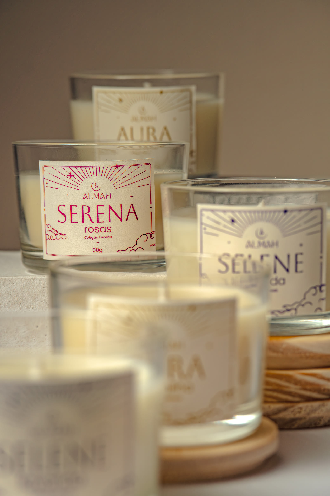
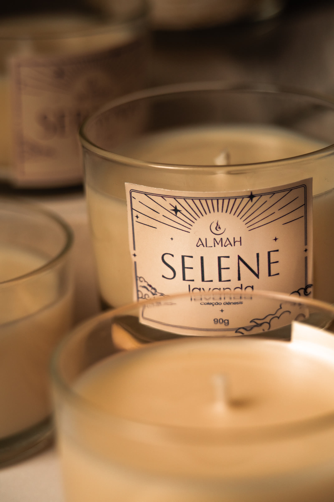
05 · Cores · Colors
A paleta vai do escuro do céu ao creme da chama acesa. O verde e o roxo vêm da papelaria.The palette runs from the dark sky to the cream of a lit flame. Green and purple come from the stationery.
06 · Tipografia · Typography
Aboreto dá nome às velas. Buenard, com a primeira letra em Fleur De Leah, escreve os cards. Poppins conta o resto.Aboreto names the candles. Buenard, with a Fleur De Leah initial, writes the cards. Poppins tells the rest.
Aura
ABCDEFGHIJKLMNOPQRSTUVWXYZ
AURA · TERRA · SELENE · SERENA · VÊNUS
Nome das velas, sempre em caixa alta
Carta
Cuidados com a sua vela
A capitular aparece só na primeira letra
Aa
Light · Italic · Regular · Medium
Aroma, peso e texto corrido
07 · Coleção Gênesis · The collection
Cada vela tem um nome, um aroma e uma cor. O rótulo é impresso numa tinta só, sobre papel creme.Each candle has a name, a scent and a color, printed in a single ink on cream paper.
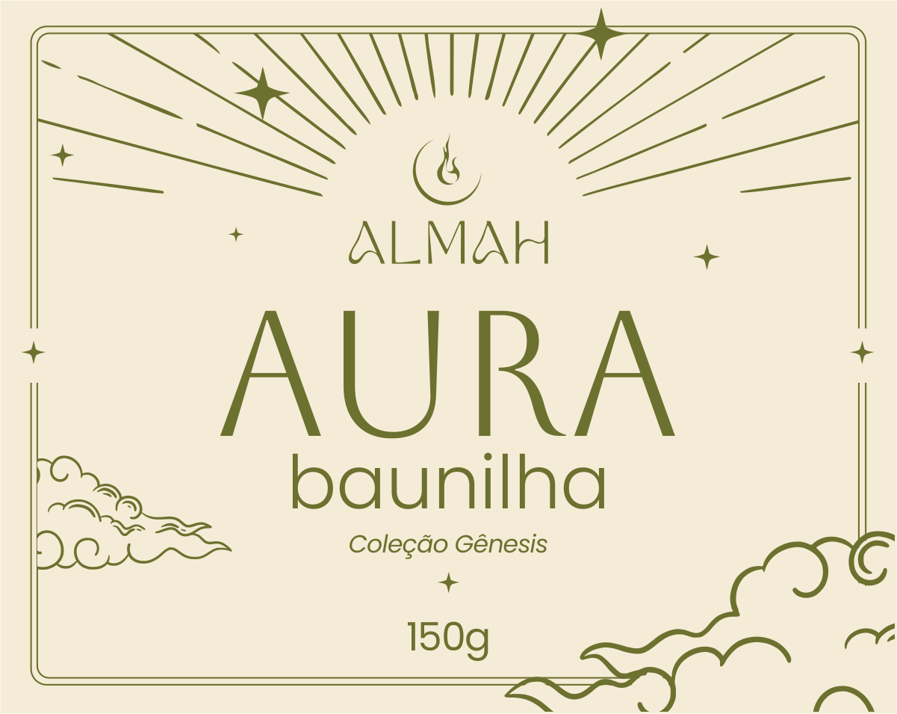
IAurabaunilha
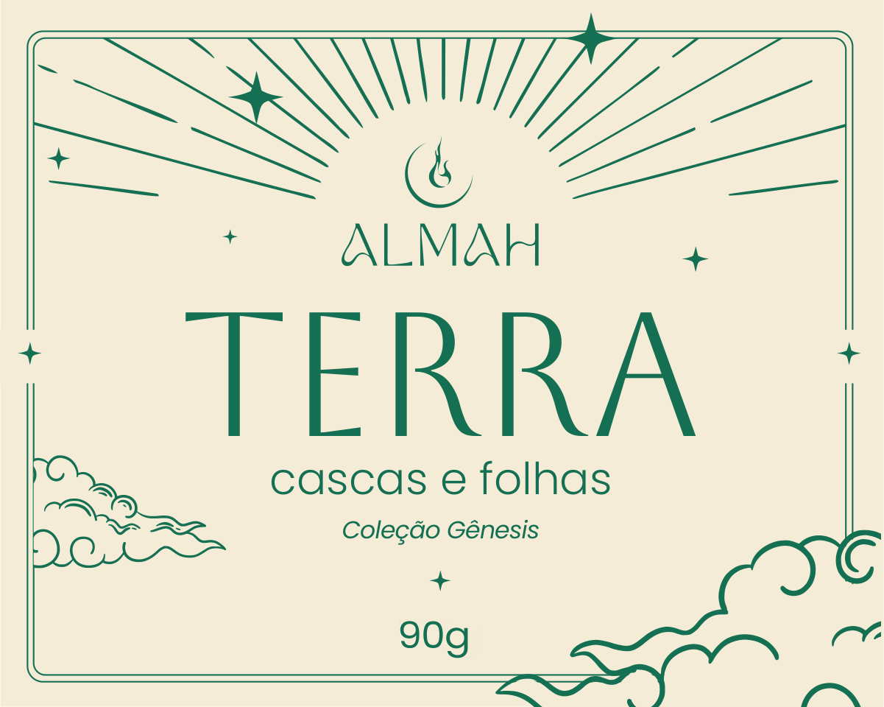
IITerracascas e folhas
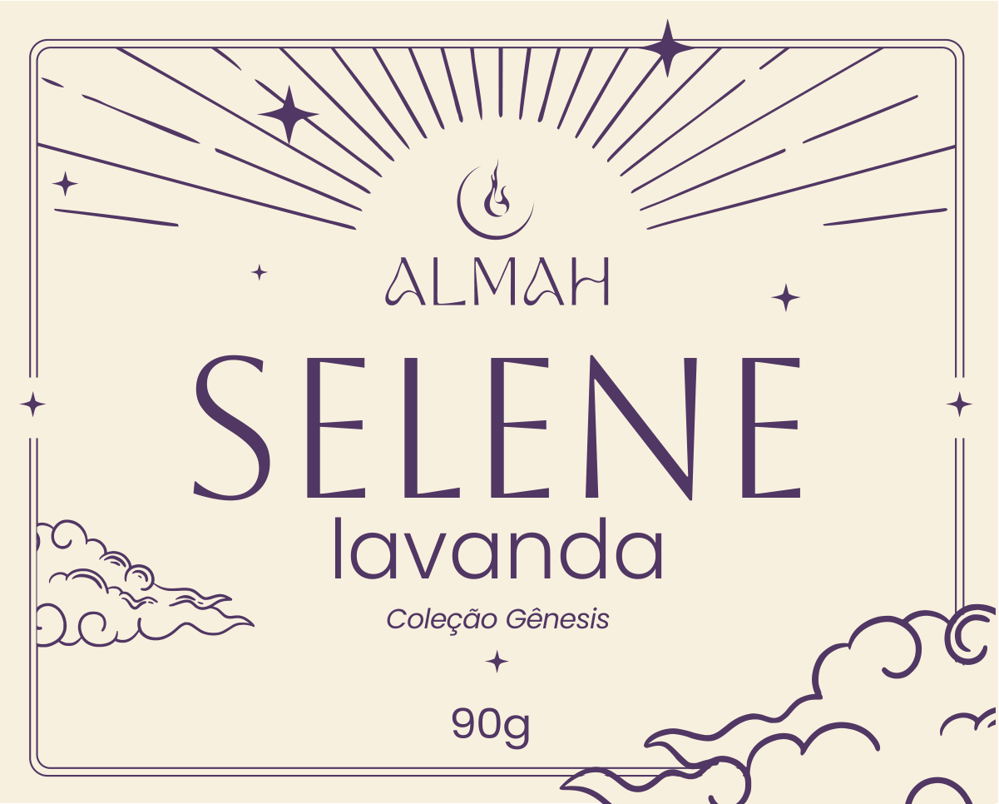
IIISelenelavanda
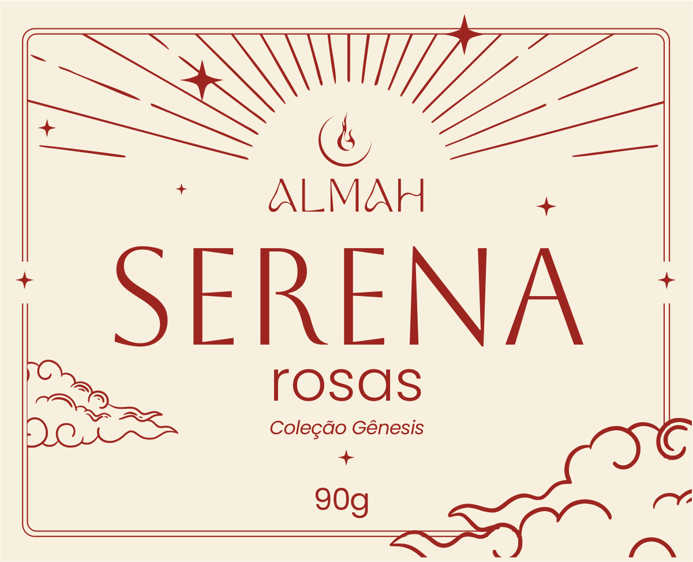
IVSerenarosas
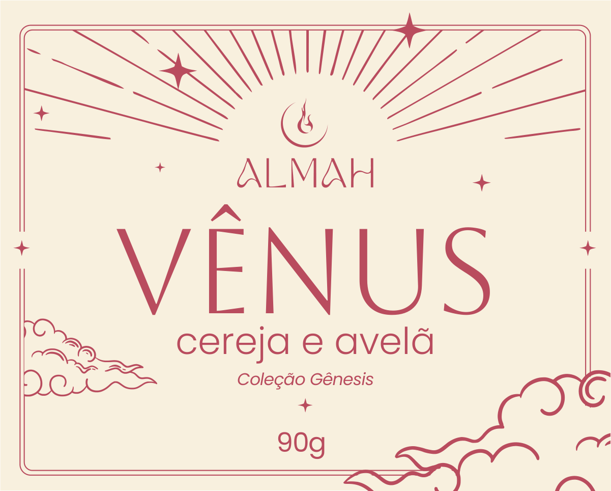
VVênuscereja e avelã
08 · Fotografia · Photography
Luz quente, fundo neutro e o ingrediente ao lado da vela, para o cheiro aparecer antes de ela acender.Warm light, neutral ground and the ingredient beside the candle, so the scent shows before it is lit.
09 · Estampa e elementos · Pattern
Símbolo, nuvem e estrelas em meia-queda, numa cor só. Veste o papel de seda, a fita e o fundo dos posts.Symbol, cloud and stars in a half-drop repeat, in a single color.
Sol raiadoatrás do logo
Nuvemtraço oriental
Estrelaquatro pontas
Arcocarta de tarô
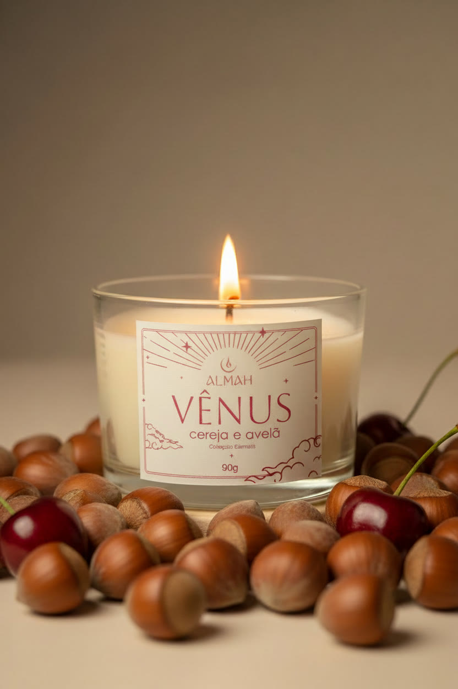
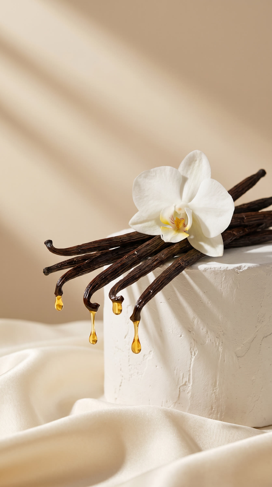
10 · Cuidados · Candle care
O card de cuidados vira um pequeno filme: a vela derrete, o pavio é aparado, a chama se apaga.The care card becomes a short film: the wax melts, the wick is trimmed, the flame goes out.
I
Deixe a cera derreter até a borda do copo. Isso evita túneis e faz a vela render até o fim.Let the wax melt to the edge on the first burn.
II
Corte 5 mm do pavio antes de reacender, para a chama não fazer fumaça preta.Trim the wick to 5 mm before relighting.
III
Não deixe a vela acesa por mais de 3 horas seguidas.Never burn for more than 3 hours at a time.
IV
Queime em superfície plana, longe de correntes de ar e de objetos inflamáveis.Burn on a flat surface, away from drafts.
V
Nunca deixe sua vela acesa sem supervisão. Apague, e a fumaça sobe como o fim do ritual.Never leave a burning candle unattended.
11 · Papelaria · Stationery
O card de cuidados, o card de obrigado em formato de carta de tarô e o adesivo que fecha a caixa.The care card, the tarot-style thank-you card and the sticker that seals the box.
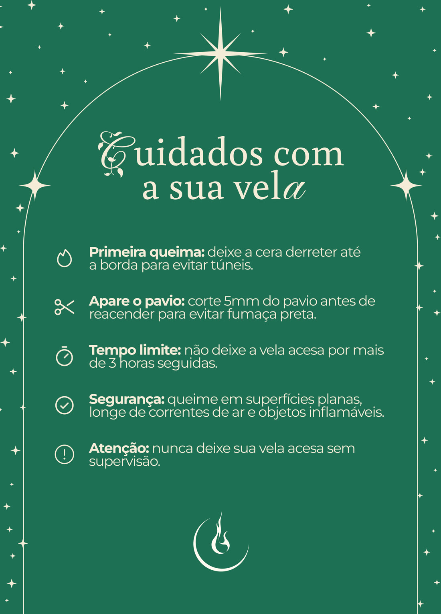
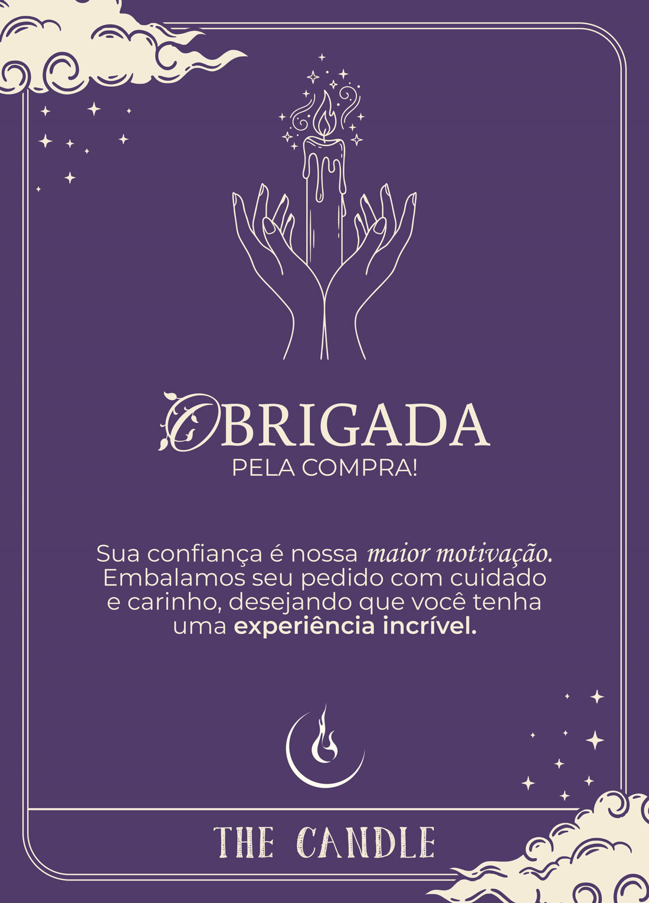
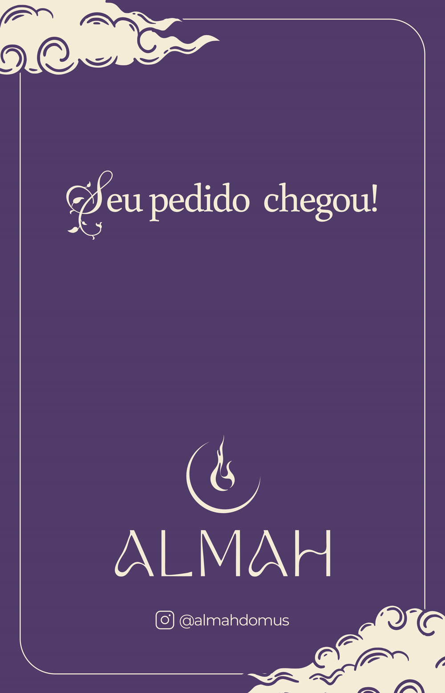
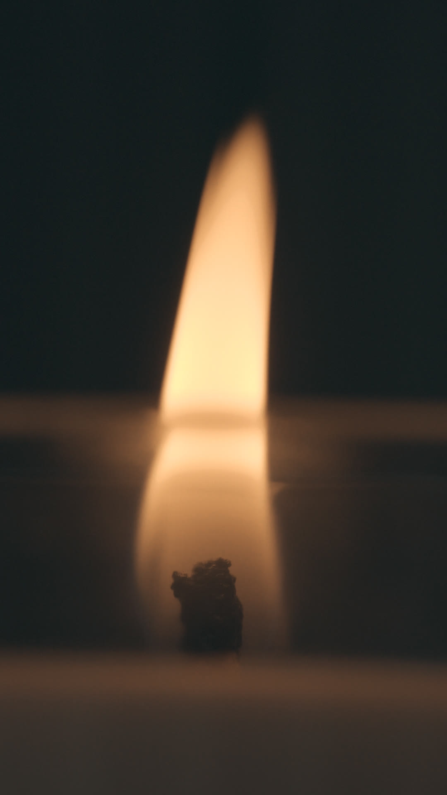
Luz que acalma,ALMAH · COLEÇÃO GÊNESIS
aroma que abraça.
Almah · Coleção Gênesis · 2026
Identidade visual para a Almah · @almahdomus
Logo desenhado à mão por Cauã Dorn · @ohdorn